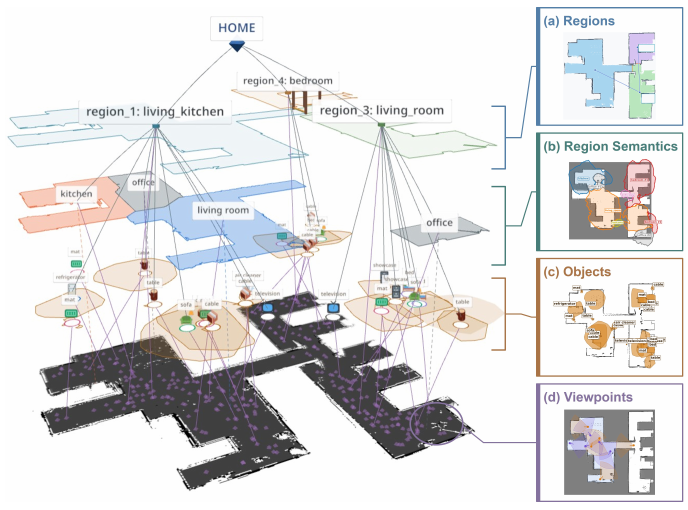
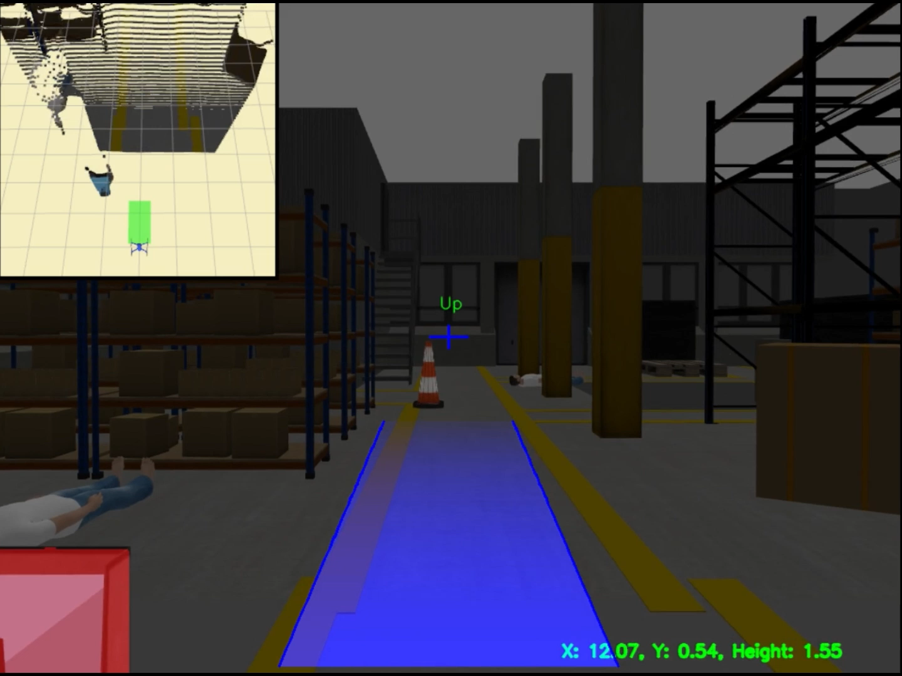
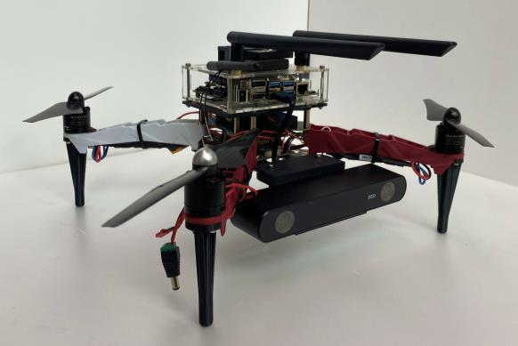
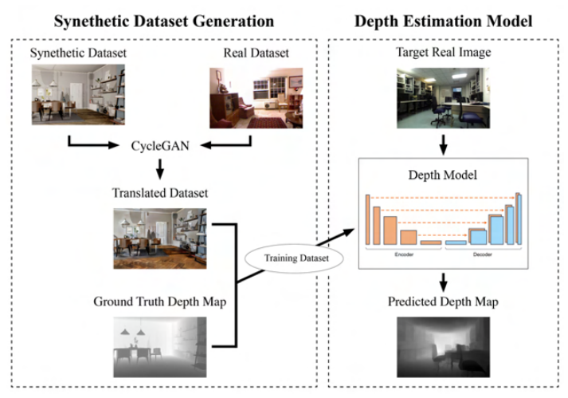
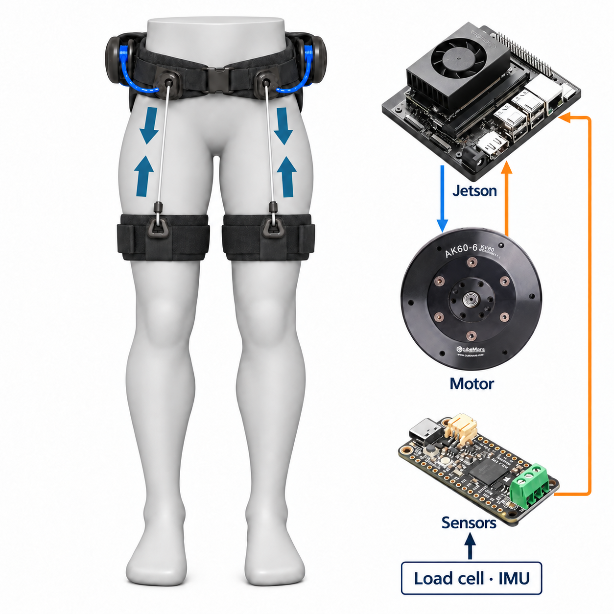
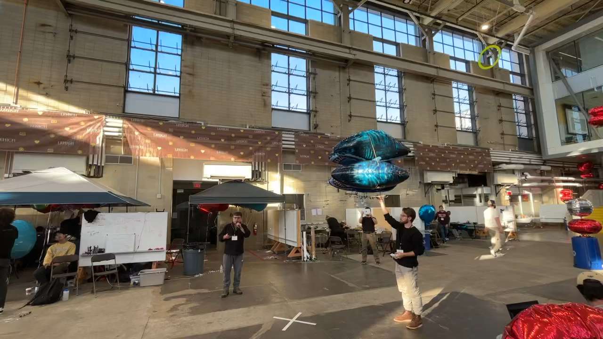

Seungyeop Lee
I'm a software engineer at Samsung Electronics, where I work on robot perception and Spatial AI. I received my M.S. in Mechanical Engineering with an integrated major in Intelligent Mobility from Korea University in 2025, where I worked in the Human-Machine Systems Lab under the supervision of Prof. Shinsuk Park. I also received my B.S. in Mechanical Engineering from Korea University in 2022.
Research Interests
I am interested in lower-limb wearable robots that help people move more freely and comfortably in everyday life.
- Vision-based terrain recognition for terrain-adaptive locomotion assistance
- Gait-state estimation and data-driven personalization using prior interaction data
- Explainable human–robot interaction to support user understanding of assistive behavior
Publications & Presentations



Selected Projects

Embedded Controller for a Tendon-Driven Soft Exosuit
Seoul National University, Wearable Robotics Laboratory, Dec. 2024 – Feb. 2025
Developed a Jetson-based control and sensing pipeline for a tendon-driven lower-limb soft exosuit, integrating load-cell and IMU measurements with CAN-based motor commands, feedback, and logging. Sensor-to-motor command processing took 10 ms.
Role: Jetson control software, load-cell and IMU sensor modules, and sensor–motor integration.
 SW
SW
Hardware-in-the-Loop Simulation for Robot Vacuum Cleaners
Samsung Electronics, Robot Vacuum Cleaner Development Lab, May 2026 – Present
Built an Isaac Sim-based HIL test system with Samsung R&D Institute-Delhi, integrating a physical controller board and production control software with simulated robot sensors.
Role: Controller board and production software integration with Isaac Sim sensor inputs.
HW
Robot Vacuum Cleaner Mechanism Development and Mass Production
Samsung Electronics, Robot Vacuum Cleaner Development Lab, Feb. 2025 – Apr. 2026
Designed and validated mop actuation mechanisms for robot vacuum cleaners, worked on durability improvements, and supported mass production and quality validation through performance testing and vision-based inspection.
Role: Mop mechanism design, durability improvement, performance testing and vision-based inspection.

Lighter-Than-Air Robot for a Light Drone Competition
Drexel University, IMAPLE Lab, Sep. 2023 – Feb. 2024 (visiting research)
Integrated Raspberry Pi video streaming and ESP32 motor commands for a helium-supported competition robot. A laptop runs YOLOv5 and visual tracking; the onboard controller drives four DC motors.
Role: Video streaming, visual tracking on a laptop, and ESP32 motor control.
Leadership
Horang-Nabi Model Aircraft Club Foundation
Aug. 2019 – Dec. 2021
Founded Korea University's first model aircraft club and led UAV projects, operations, and undergraduate study activities.
National University Student Model Aircraft Competition
Nov. 2019 – Nov. 2020
Led a team to design and build a scale aircraft for the 21st national university model aircraft competition.
Pi Village Start-up Team – DRONEDU
Jan. 2020 – Oct. 2020
Developed a drone education program for high school and university students as a campus start-up initiative.
Teaching & Mentoring
Teaching Assistant, Dynamics
Fall 2024
Taught two-link manipulator modeling using Adams simulation.
Teaching Assistant, Robotics
Spring 2023, Spring 2024
Taught Adams simulation, Raspberry Pi, and PID-based DC motor control.
Robotics Career Mentor, SC Joint Career Consulting
Mar. 17, 2026
Participated in a government-supported career mentoring event as a Samsung Electronics engineer.